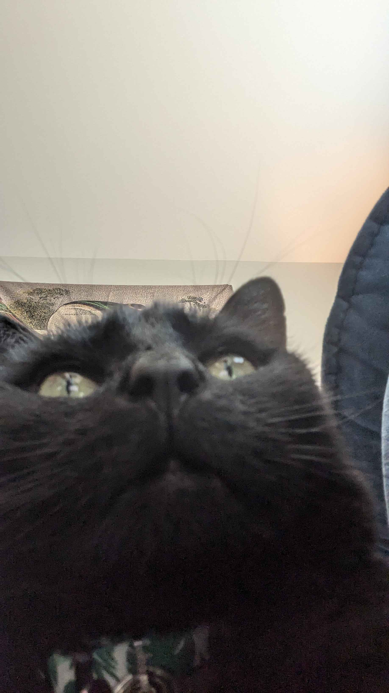
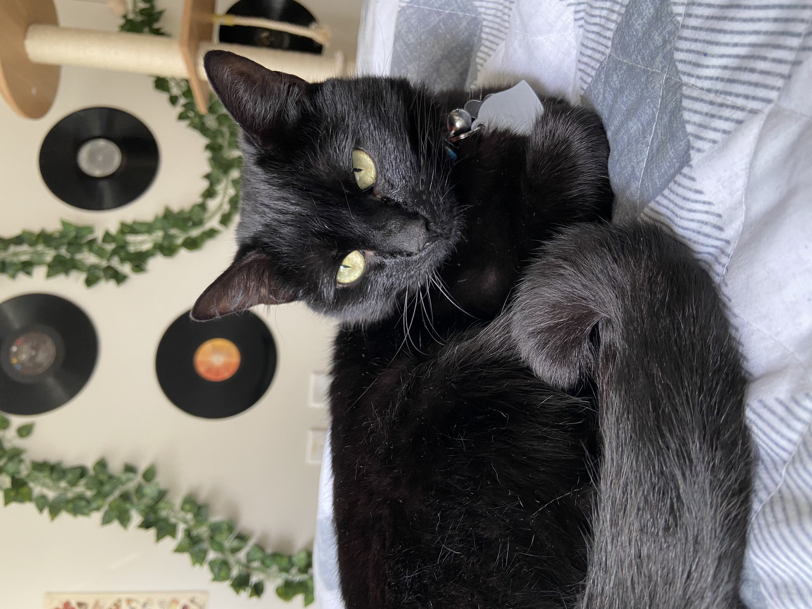
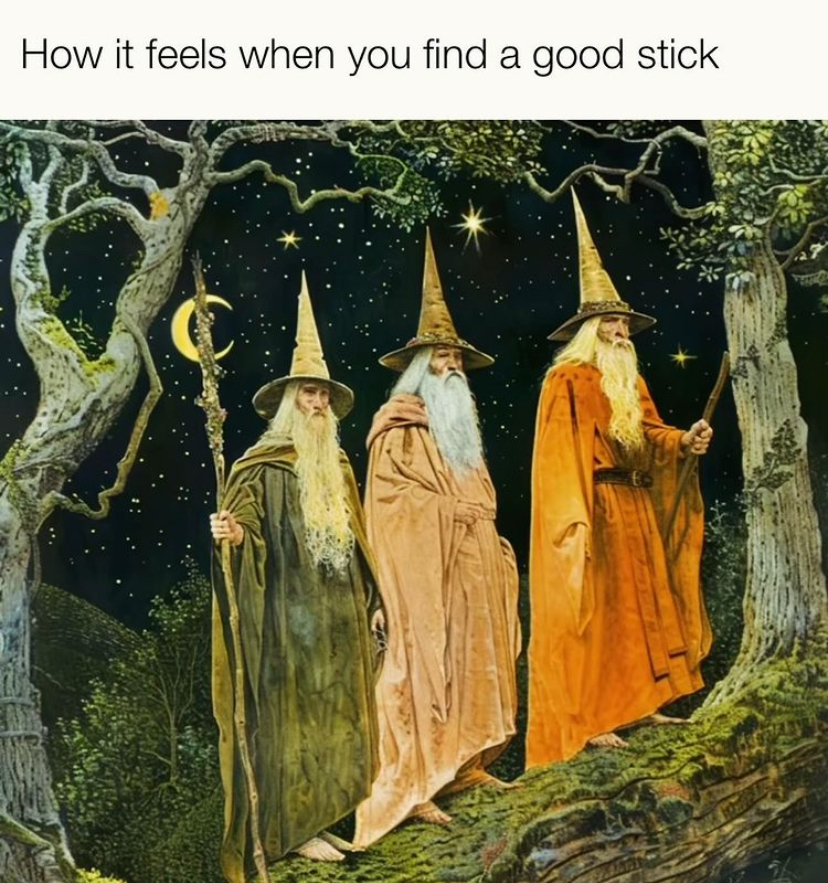
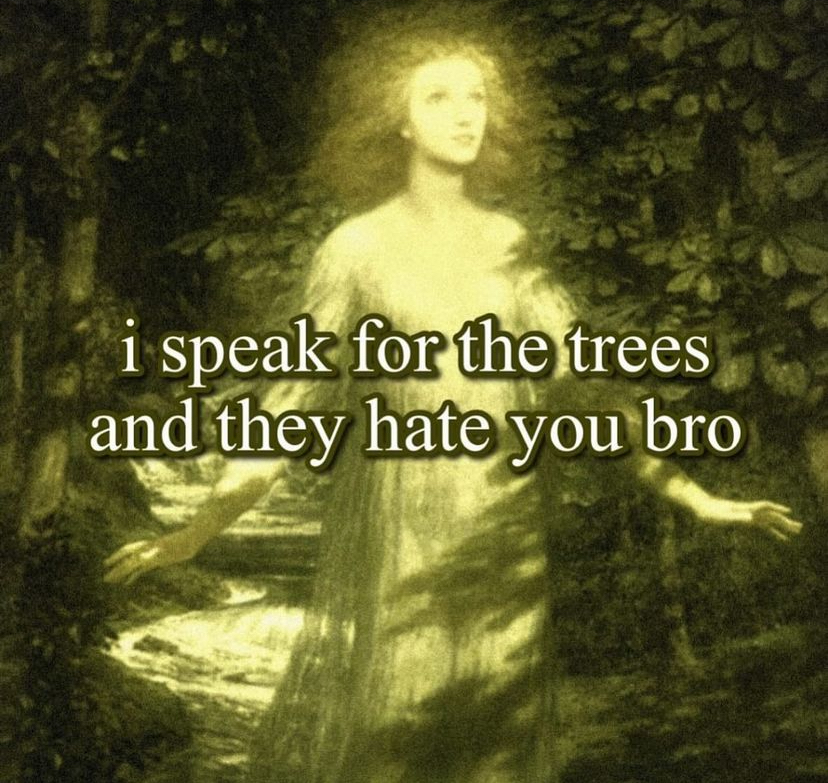
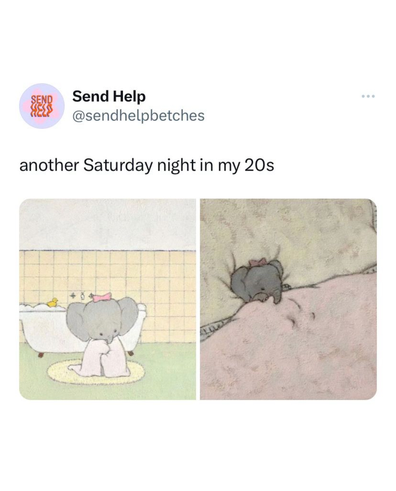

“Man is least himself when he talks in his own person. Give him a mask, and he will tell you the truth.”
— Oscar Wilde
Welcome to my portfolio! Here you'll find a little bit about me, my favorite books, some lovely pictures, projects I've worked on, and my contact information!
In the realm of personal fun facts, I'm a Computer Science student at UNC Greensboro with plans to graduate in the Spring of 2027. I enjoy UX/UI work because it demands both a creative eye and technical specificity. I'm also a fan of reading, writing, yoga, and watching shows on TV!
Growing up, the power of literature was inescapable. In my adult life, I've come to value books beyond words. If I had to pick some, these are the stories I would share.
I have several interests, so here are a bunch of photos that make my brain happy. Among them are memes that make me giggle, my cat Minerva, and some of my favorite outdoor places.




